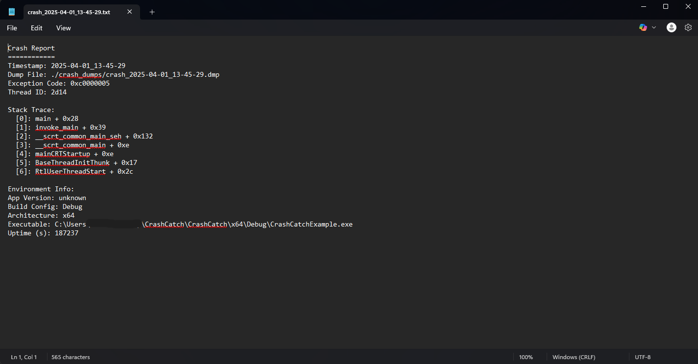
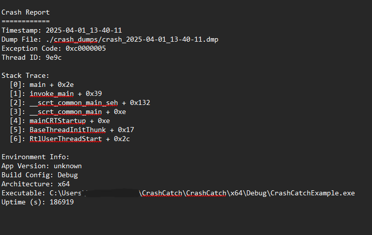
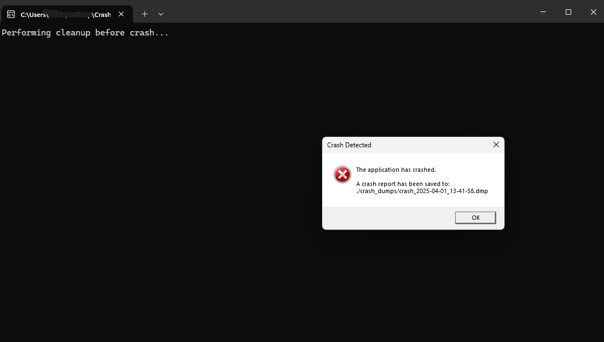
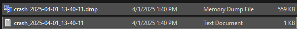

CrashCatch¶
💥 A modern, single-header crash reporting library for C++ on Windows and Linux.


🚀 What is CrashCatch?¶
CrashCatch is a modern, single-header crash reporting library for C++ applications — supporting both Windows and Linux.
It automatically captures crashes, logs diagnostic information, generates .dmp (Windows) or .txt (Windows & Linux) reports, and includes accurate stack traces and environment metadata. From minimal CLI tools to full desktop apps, CrashCatch fits right in.
Key highlights:
- No external dependencies just include the header
- Accurate crash-site stack traces Windows stack walk uses the actual crash context, not the handler frame
- Full crash context (timestamp, platform, executable path, version, etc.)
- Callbacks fire after crash files are written safe to read or upload from within onCrash
- Async-signal-safe Linux handler via fork() no deadlocks even on heap corruption
- Configurable onCrash() and onCrashUpload() hooks
- Optional crash dialog support (Windows GUI apps)
- Available via vcpkg and Conan
v1.4.0 Correctness release: accurate crash-site stack context, async-signal-safe Linux handler, callbacks after file write, thread-safe timestamps, and more.
v1.3.0 Windows stack trace output in
.txtlogs,includeStackTraceconfig flag, and DLL/shared library support viaCrashCatchDLL.hpp.v1.2.0 Complete Linux support with signal handling, demangled stack traces, and crash context generation.
🤔 Why CrashCatch?¶
Most crash reporting solutions for C++ require heavyweight SDKs, mandatory cloud uploads, or days of wiring up Crashpad just to get a stack trace. CrashCatch is different:
| CrashCatch | Crashpad | Sentry Native | Backtrace | |
|---|---|---|---|---|
| Single header | ✅ | ❌ | ❌ | ❌ |
| No external dependencies | ✅ | ❌ | ❌ | ❌ |
| Offline-first | ✅ | ❌ | ❌ | ❌ |
| Windows + Linux | ✅ | ✅ | ✅ | ✅ |
| onCrash / onUpload hooks | ✅ | ❌ | ✅ | ✅ |
| Free & open source | ✅ | ✅ | Partial | ❌ |
✅ Supported Platforms¶
| OS | Supported | Crash Handling Method |
|---|---|---|
| Windows | ✅ Yes | SetUnhandledExceptionFilter + MiniDump + StackWalk64 |
| Linux | ✅ Yes | POSIX signals + backtrace() + fork() for safe I/O |
| macOS | 🚧 Planned | POSIX + Mach exceptions |
⚡ Quick Start¶
Zero Config (Auto-init)¶
#define CRASHCATCH_AUTO_INIT
#include "CrashCatch.hpp"
int main() {
int* ptr = nullptr;
*ptr = 42; // CrashCatch catches this automatically
}
One-Liner Setup¶
Full Config Example¶
#include "CrashCatch.hpp"
#include <iostream>
int main() {
CrashCatch::Config config;
config.appVersion = "2.0.0";
config.buildConfig = "Release";
config.additionalNotes = "Test build";
config.showCrashDialog = false;
config.onCrash = [](const CrashCatch::CrashContext& ctx) {
// Files are on disk — safe to read or upload here
std::cout << "Crash log: " << ctx.logFilePath << "\n";
};
CrashCatch::initialize(config);
int* ptr = nullptr;
*ptr = 42;
}
📦 Installing¶
Header only¶
Copy CrashCatch.hpp into your project no build system required.
CMake¶
vcpkg¶
Conan¶
🧪 Examples¶
Explore working examples in the GitHub repo:
| Example | What it demonstrates |
|---|---|
Example_ZeroConfig |
Auto-init with CRASHCATCH_AUTO_INIT macro |
Example_OneLiner |
CrashCatch::enable() minimal setup |
Example_FullConfig |
All config options including callbacks |
Example_ThreadCrash |
Crash on a non-main thread |
Example_divideByZero |
Arithmetic exception handling |
Example_UploadCrash |
onCrashUpload reading and uploading files |
Example_StackTrace |
includeStackTrace flag |
📸 Screenshots¶




🛠 Features¶
- ✅ Header-only single
.hpp, no external dependencies - ✅ Cross-platform Windows & Linux support out of the box
- ✅ Accurate crash-site stack traces Windows stack walk uses
ep->ContextRecord, not the handler frame (v1.4.0) - ✅ Async-signal-safe Linux handler uses
fork()so heap corruption can't deadlock the handler (v1.4.0) - ✅ Callbacks fire after files are written safe to read or upload from
onCrash/onCrashUpload(v1.4.0) - ✅ Thread-safe timestamps
localtime_s/localtime_r(v1.4.0) - ✅ Automatic Crash Capture via
SetUnhandledExceptionFilter(Windows) or POSIX signals (Linux) - ✅ Crash Context Info includes executable path, build config, version, and notes
- ✅ Crash Reporting
.dmp(Windows) and.txt(Windows & Linux) crash files - ✅ Symbol Resolution
SymFromAddr+ file/line info (Windows), demangled symbols (Linux) - ✅
onCrashCallback run custom cleanup or logging with full crash context - ✅
onCrashUploadHook pass report data to your custom uploader - ✅
includeStackTraceflag suppress stack trace output when not needed (v1.3.0) - ✅ DLL / shared library support plain C interface via
CrashCatchDLL.hppfor C++11/C++98 consumers (v1.3.0) - ✅ Optional Crash Dialog user-friendly message box (Windows only)
- ✅ Configurable dump location, filename prefix, timestamping, and more
- ✅ CMake + vcpkg + Conan multiple install paths supported
📋 Requirements¶
- C++17 or later (or C++11/C++98/C via
CrashCatchDLL.hpp) - Windows: MSVC (Visual Studio 2019+) or MinGW
- Linux: GCC or Clang with
-rdynamicfor stack traces
🗺 Roadmap¶
- [x] Windows crash capture + MiniDump
- [x] Linux signal handling + backtrace
- [x]
onCrashandonCrashUploadhooks - [x] CMake install support
- [x] DLL / shared library support (
CrashCatchDLL.hpp) - [x] Windows stack trace in
.txtlog +includeStackTraceflag - [x] Accurate crash-site stack context
- [x] Async-signal-safe Linux crash handler
- [x] Thread-safe timestamps
- [x] vcpkg and Conan package registry support
- [ ] macOS support (POSIX + Mach exceptions)
🔬 Understand Your Crashes CrashCatch Analyzer¶
CrashCatch generates the report. CrashCatch Analyzer tells you what it means.
Drop in a crash report and get:
- Symbolicated stack traces
- Plain-English root cause explanation (Explain Mode)
- Deep technical analysis for engineers (Engineer Mode)
- PDF export for sharing with your team
Currently in Beta. Download on GitHub
📄 License¶
MIT License — created and maintained by Keith Pottratz GitHub Repo